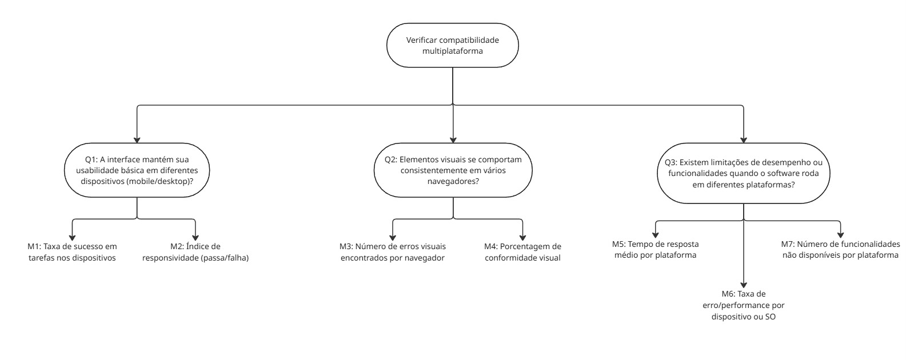
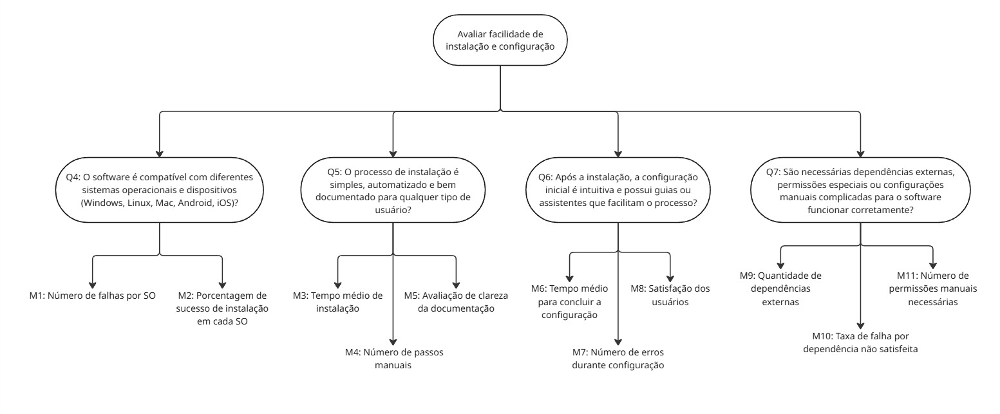

Goal Question Metric
Objetivo de negócio do AGROMART
O Agromart é uma plataforma digital que conecta agricultores familiares a consumidores, facilitando a divulgação e venda de produtos agroecológicos. Criado durante um Hackathon da UnB-FGA em 2020, o projeto evoluiu para atender às necessidades das CSAs, incorporando funcionalidades como geolocalização, filtros, contato direto e pagamento digital. Hoje, segue em desenvolvimento como software open source, promovendo a produção sustentável e o consumo consciente.
A seguir, apresenta-se a primeira etapa do modelo GQM, que consiste na definição do objetivo de negócio do projeto:
Aprimorar a conexão entre agricultores familiares e consumidores, promovendo a divulgação eficiente de produtos agroecológicos por meio de uma plataforma digital acessível, especialmente adaptada ao contexto de CSAs (Comunidades que Sustentam a Agricultura), com funcionalidades que atendem às necessidades de comunicação, localização e transações, inicialmente motivada pela necessidade de superação do isolamento social decorrente da pandemia de COVID-19.
Adaptação para Portabilidade
Segue a reformulação do documento com foco em portabilidade, mantendo a estrutura original mas adaptando os objetivos, perguntas e critérios de qualidade:
Objetivo do Negócio
Garantir que a plataforma possa ser facilmente adaptada e executada em diferentes ambientes (dispositivos, sistemas operacionais, navegadores e contextos tecnológicos), com especial atenção à inclusão de usuários com baixa alfabetização digital, mantendo a simplicidade e acessibilidade em todos os ambientes suportados.
A tabela 1 apresenta o objetivo de medição do nosso projeto:
Tabela 1 - Objetivo de medição.
| Componente | Descrição |
|---|---|
| Analisa | Capacidade de adaptação do sistema |
| Propósito | Avaliar a portabilidade da solução |
| Critérios | Adaptabilidade e compatibilidade |
| Perspectiva | Equipe técnica e usuários finais |
| Contexto | Disciplina de Qualidade de Software |
Fonte: João Lobo, João Sapiência, Rodrigo Gontijo, 2025.
Objetivo 1: Verificar compatibilidade multiplataforma
Tabela 2 - Questões Objetivo de Medição 1.
Perguntas
| ID | Pergunta | Hipótese |
|---|---|---|
| Q1 | A interface mantém sua usabilidade básica em diferentes dispositivos (mobile/desktop)? | Espera-se que pelo menos 90% dos usuários consigam realizar as tarefas principais em ambos os dispositivos. |
| Q2 | Os elementos visuais se comportam consistentemente em vários navegadores? | Espera-se que no mínimo 95% das páginas mantenham o mesmo layout e comportamento entre os navegadores mais utilizados. |
| Q3 | Existem limitações de desempenho ou funcionalidades quando o software roda em diferentes plataformas? | Espera-se que menos de 10% dos testes apresentem perda significativa de desempenho ou falhas de funcionalidade entre plataformas. |
Fonte: João Lobo, João Sapiência, Rodrigo Gontijo, 2025.
Diagrama
Figura 1 - Diagrama de Questões e métricas - Portabilidade.

Link para melhor visualização do diagramas
Fonte: João Lobo, 2025.
Abstraction Sheet
Tabela 2 - Abstraction Sheet - Objetivo 1
| Elemento | Descrição |
|---|---|
| Object | Software Agromart — Verificar a compatibilidade multiplataforma do sistema em diferentes ambientes (dispositivos e navegadores). |
| Purpose | Avaliar se o software mantém seu funcionamento, aparência e usabilidade de forma consistente em diferentes dispositivos e navegadores, sem exigir ajustes complexos. |
| Quality Focus | - Portabilidade - Usabilidade multiplataforma - Consistência visual e funcional |
| Baseline Hypotheses | - O sistema deve manter sua usabilidade e consistência visual em diferentes dispositivos (desktop e mobile) e navegadores. - Não deve exigir configurações específicas para isso. |
| Variation Factors | - Tipo de dispositivo (desktop, notebook, tablet, smartphone) - Navegadores (Chrome, Firefox, Edge, Safari, Opera) - Resoluções de tela - Sistemas operacionais |
| Impact of Variation Factors | - A interface pode perder usabilidade se não se adaptar corretamente a telas menores (mobile). - Elementos visuais podem quebrar ou se desalinharem em navegadores diferentes. - Problemas de compatibilidade podem exigir configurações manuais, afetando a experiência do usuário. - Diferenças de comportamento podem gerar inconsistências no fluxo de trabalho e reduzir a eficiência. |
Fonte: João Lobo, João Sapiência, Rodrigo Gontijo, 2025.
Objetivo 2: Avaliar facilidade de instalação e configuração
Tabela 3 - Questões Objetivo de Medição 1.
Perguntas
| ID | Pergunta | Hipótese |
|---|---|---|
| Q4 | O software é compatível com diferentes sistemas operacionais e dispositivos (Windows, Linux, Mac, Android, iOS)? | Espera-se que o software funcione corretamente em pelo menos 95% das combinações de sistema operacional e dispositivo testadas. |
| Q5 | O processo de instalação é simples, automatizado e bem documentado para qualquer tipo de usuário? | Espera-se que pelo menos 90% dos usuários consigam instalar o software sem ajuda técnica, seguindo apenas a documentação oficial. |
| Q6 | Após a instalação, a configuração inicial é intuitiva e possui guias ou assistentes que facilitam o processo? | Espera-se que 85% dos usuários completem a configuração inicial sem erros ou necessidade de suporte externo. |
| Q7 | São necessárias dependências externas, permissões especiais ou configurações manuais complicadas para o software funcionar corretamente? | Espera-se que menos de 10% dos casos exijam configurações complexas ou permissões avançadas para o funcionamento básico do software. |
Fonte: João Lobo, João Sapiência, Rodrigo Gontijo, 2025.
Diagrama
Figura 2 - Diagrama de Questões e métricas - Portabilidade.

Link para melhor visualização do diagramas
Fonte: João Lobo, 2025.
Abstraction Sheet
Tabela 4 - Abstraction Sheet - Objetivo 2
| Elemento | Descrição |
|---|---|
| Object | Software Agromart — Avaliação das características relacionadas à compatibilidade multiplataforma, instalação e configuração. |
| Purpose | Avaliar se o software funciona corretamente em diferentes plataformas e se o processo de instalação e configuração é simples e acessível. |
| Quality Focus | - Portabilidade (compatibilidade multiplataforma) - Facilidade de instalação e configuração |
| Baseline Hypotheses | - O software deve funcionar corretamente em diferentes sistemas operacionais e navegadores. - O processo de instalação e configuração deve ser simples e bem documentado. |
| Variation Factors | - Sistema operacional (Windows, Linux, macOS, Android, iOS) - Tipo de dispositivo (desktop, mobile) - Navegadores (Chrome, Firefox, Edge, Safari) - Perfil do usuário (técnico ou não técnico) - Dependências externas ou requisitos específicos de ambiente |
| Impact of Variation Factors | - Incompatibilidades podem comprometer a experiência do usuário em determinadas plataformas. - Processos de instalação complexos podem gerar erros ou abandono do uso. - Problemas de renderização podem afetar a usabilidade em navegadores ou dispositivos específicos. - Necessidade de configurações manuais pode reduzir a adoção e aumentar erros. |
Fonte: João Lobo, João Sapiência, Rodrigo Gontijo, 2025.
Tabela de Contribuição
| Matrícula | Participante | Contribuição (%) |
|---|---|---|
| Brenno Silva | 190085045 | 10% |
| Caio Sabino | 231026302 | 20% |
| Igor Thiago | 190029692 | 10% |
| João Lobo | 231012245 | 20% |
| João Sapiência | 231026400 | 20% |
| Rodrigo Gontijo | 1900116498 | 20% |
Histórico de Versões
| Versão | Data | Descrição | Autor | Revisor |
|---|---|---|---|---|
| 1.0 | 22/05/2025 | Criação da versão inicial | João Lobo | João Sapiência |
| 1.1 | 03/06/2025 | Revisão do texto do documento | João Sapiência | Rodrigo Gontijo |
| 1.2 | 03/06/2025 | Revisão do abstraction sheets | Rodrigo Gontijo | João Lobo |
| 1.3 | 03/06/2025 | Adição de títulos e adição dos diagramas | João Lobo | Rodrigo Gontijo |
| 1.4 | 03/06/2025 | Revisão do abstraction sheets | Rodrigo Gontijo | |
| 1.5 | 03/06/2025 | Criação das hipotéses de métricas | João Sapiência | Rodrigo Gontijo |